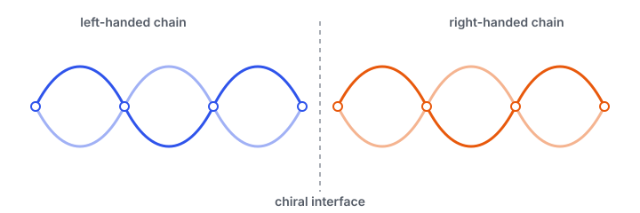

I am currently interested in chiral systems, where the mirror and inversion symmetries are both broken. In particular, I study structural chirality and how it influences electrons and phonons.
Topics
Spin transport at chiral interfaces
When helical chains meet at an interface, the broken symmetries can couple an electron's momentum to its spin. I study spin-flip scattering at such chiral interfaces and what it implies for spin-selective transport.
Chirality in structural phase transitions
Structural transitions can switch a crystal between chiral and achiral states, or between handedness. I investigate how chirality emerges, survives, or reverses across these transitions, and its signatures in the lattice dynamics.
Electrons & phonons in chiral crystals
Chiral crystals can host phonons and electronic states with intrinsic angular character. I am interested in how handedness shows up in their dispersion, coupling, and response.
